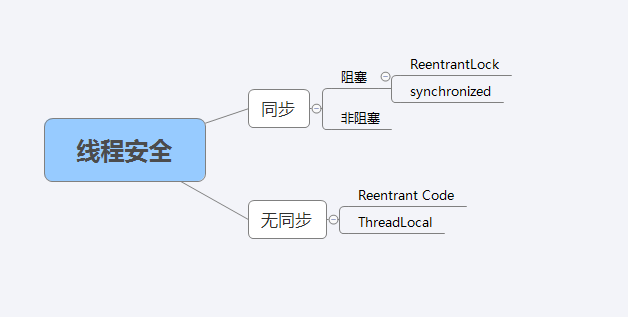

Java线程安全
线程安全等级
根据线程的安全程度由强到弱，可以分为 $5$ 个等级。
不可变
在 Java 中，不可变对象一定是线程安全的，比如 final 关键字修饰的数据不可修改，比如 String、Long、Integer。
绝对的线程安全
不管运行时环境如何，调用者都不需要任何额外的同步措施。如 Random 、ConcurrentHashMap、Concurrent 集合、atomic。
相对的线程安全
通常来说线程是安全的，但对于一些特定顺序的连续调用就可能需要在调用端使用额外的同步手段来保证调用的正确性。大部分线程都属于这种类型，如 vector。
线程兼容
对象本身不提供线程安全机制，但是通过外部同步，可以在并发环境使用， 如 ArrayList、HashMap。
在使用这些对象的时候，都要考虑是否会发生线程安全问题。
线程对立
无论是否采用同步措施，都无法在并发中使用。
线程安全的实现方法

同步方案
同步是指在多线程并发访问共享数据时，保证共享数据在同一时刻只被一个线程使用。
互斥同步
互斥是实现同步的一种手段，比如临界区、互斥量和信号量。
在 Java 中，最基本的互斥同步手段就是 synchronized 关键字。synchronized 是独占锁，可重入，加锁和解锁的过程自动进行，不必担心最后是否释放锁，易于操作，但不够灵活。synchronized 不可响应中断，一个线程获取不到锁就一直等着。
ReentrantLock 也是通过互斥来实现同步。ReentrantLock 也是独占锁，也可重入，加锁和解锁的过程需要手动进行，且次数需一样，否则其他线程无法获得锁，不易操作，但非常灵活。ReentrantLock 可以响应中断，可以实现公平锁机制(在锁上等待时间最长的线程将获得锁的使用权)。
ReentrantLock 的简单使用：
1 | import java.util.concurrent.TimeUnit; |
运行结果：
1 | 线程A获取锁 |
互斥同步最主要的问题就是进行线程阻塞和唤醒所带来的性能问题，因此这种同步也成为阻塞同步。
互斥同步属于一种悲观的并发策略，无论共享数据是否真的会出现竞争，它都要进行加锁。
非阻塞同步
CAS：每次不加锁而是假设没有冲突而去完成某项操作，如果因为冲突失败就重试，直到成功为止，是一种乐观的并发策略。
CAS 是英文单词 Compare And Swap 的缩写，翻译过来就是比较并替换。
CAS机制当中使用了3个基本操作数：内存地址 V，旧的预期值 A，要修改的新值 B。更新一个变量的时候，只有当变量的预期值 A 和内存地址 V 当中的实际值相同时，才会将内存地址 V 对应的值修改为 B。
举个例子：
在内存地址 $V$ 中，存储着值为 $10$ 的变量。此时线程 $1$ 想把变量的值 $+1$，对线程 $1$ 来说，旧的预期值 $A=10$ ，要修改的新值 $B=11$。在线程 $1$ 要提交更新之前，线程 $2$ 抢先一步，把内存地址 $V$ 中的变量值更新成 $11$。线程 $1$ 开始提交更新，发现 $A$ 不等于 $V$ 的实际值，提交失败。线程 $1$ 重新获取内存地址 $V$ 的当前值，并重新计算想要修改的新值。此时对线程 $1$ 来说，$A=11$，$B=12$，这个重新尝试的过程被称为自旋。这次比较幸运，没有其他线程改变地址 $V$ 的值。线程 $1$ 进行 Compare，发现 $A$ 和地址 $V$ 的实际值是相等的。线程 $1$ 进行 SWAP，把地址 $V$ 的值替换为 $B$，也就是 $12$。
Atomic 包下的原子类是基于 CAS 实现的。原子操作类，指的是 java.util.concurrent.atomic 包下，一系列以 Atomic 开头的包装类。例如AtomicBoolean，AtomicInteger，AtomicLong。它们分别用于Boolean，Integer，Long类型的原子性操作。
下面是一个无阻塞多线程争抢资源的模型：
1 | import java.util.concurrent.atomic.AtomicBoolean; |
运行结果：
1 | Thread-1 flag:true |
compareAndSet(true,false) 方法要拆成 compare(true) 方法和 Set(false) 方法理解，是 compare(true) 等于 true 后，就马上设置共享内存为 false。
CAS 的缺点：
- 在并发量比较高的情况下，如果许多线程反复尝试更新某一个变量，却又一直更新不成功，循环往复，会给 CPU 带来很大的压力。
- CAS 机制所保证的只是一个变量的原子性操作，而不能保证整个代码块的原子性。比如需要保证 $3$ 个变量共同进行原子性的更新，就不得不使用 Synchronized 了。
- 无法解决 ABA 问题。ABA 就是一个值由 A 变为 B，再由 B 变为 A，使用 CAS 操作无法感知到该种情况下出现的变化，带来的后果很严重，比如银行内部员工，从系统挪走一百万，之后还了回来，系统却感知不到。
解决 ABA 可以使每一次修改都带上时间戳，以记录版本号的形式使得 CAS 感知到这种狸猫换太子的操作。Java 提供了 AtomicStampedReference 类来解决，该类除了指定旧值与期盼值，还要指定旧的版本号与期盼的版本号。该类的 compareAndSet 方法作用是首先检查当前引用是否等于预期引用，并且当前标志是否等于预期标志，如果全部相等，则以原子方式将该引用和该标志的值设置为给定的更新值。
无同步方案
如果一个方法不涉及共享数据，那它自然不需要任何同步操作去保证正确性，因此有一些代码天生就是线程安全的。
可重入代码
可重入代码（ReentrantCode）也称为纯代码（Pure Code），可以在代码执行的任何时刻中断它，转而去执行另外一段代码，而在控制权返回后，原来的程序不会出现任何错误。所有的可重入代码都是线程安全的，但是并非所有的线程安全的代码都是可重入的。
线程本地存储
如果一段代码中所需的数据必须与其他代码共享，那就看这些共享数据的代码是否能保证在同一个线程中执行？如果能保证，我们就可以把共享数据的可见范围限制在同一个线程之内。这样无需同步也能保证线程之间不出现数据的争用问题。
如“生产者-消费者”模式、Web交互模型中的“一个请求对应一个服务器线程“。